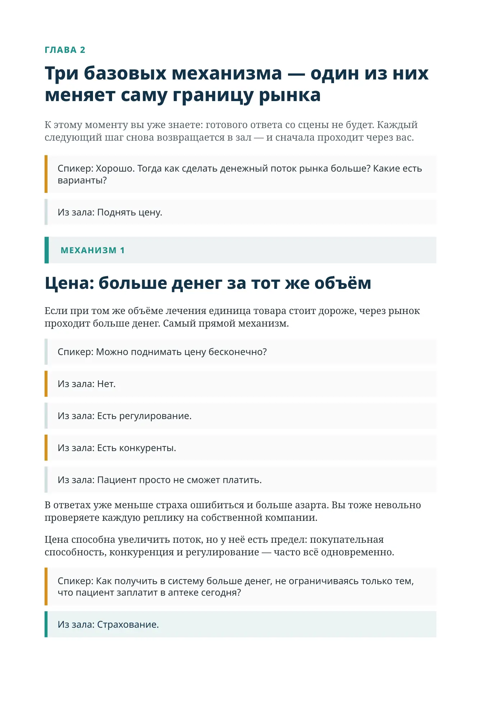
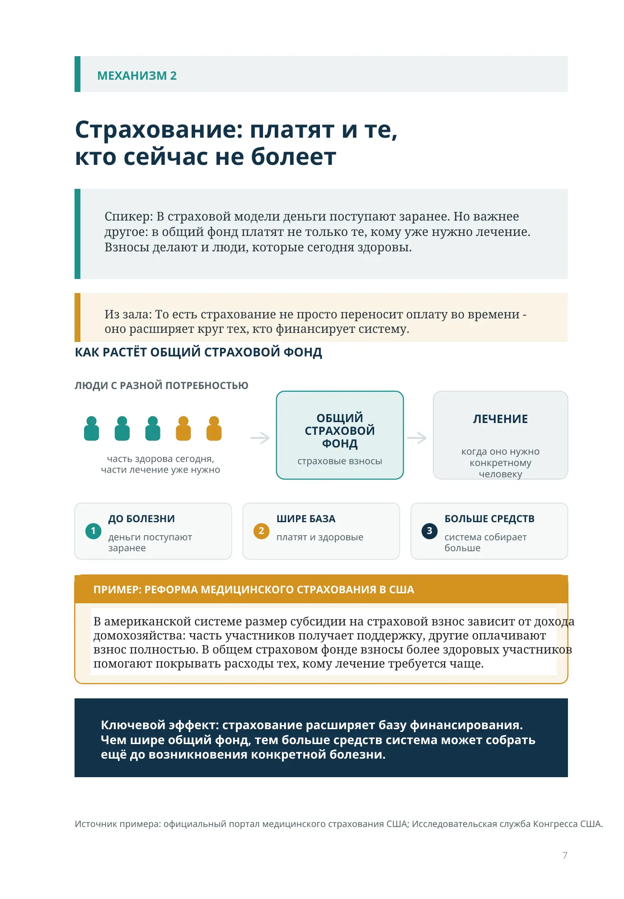
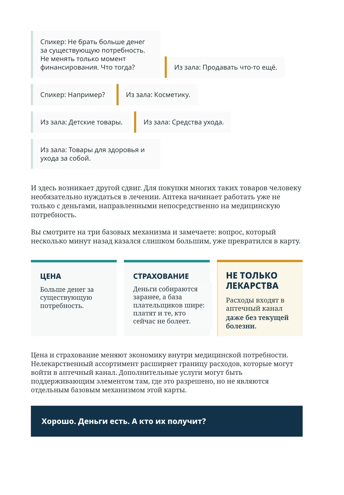
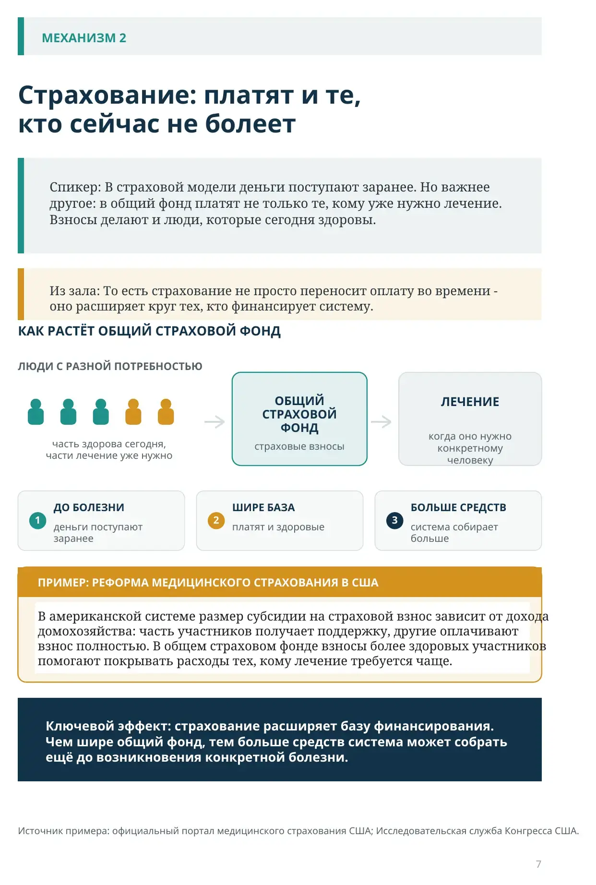
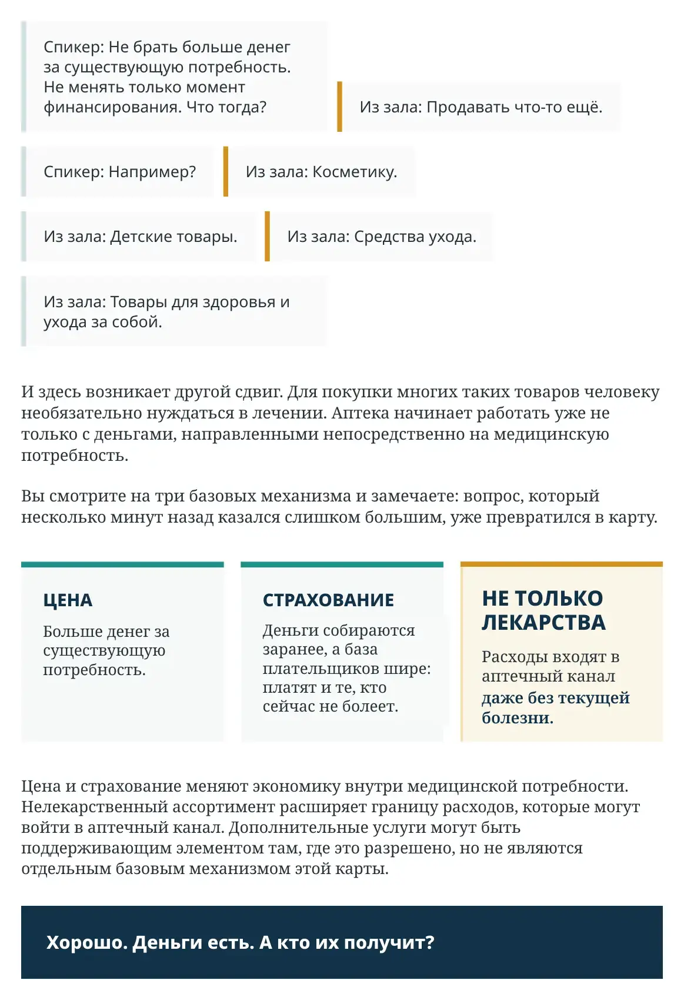

Как сделать денежный поток больше?
ГЛАВА 2
Три базовых механизма — один из них меняет саму границу рынка
К этому моменту вы уже знаете: готового ответа со сцены не будет. Каждый следующий шаг снова возвращается в зал — и сначала проходит через вас.
Спикер: Хорошо. Тогда как сделать денежный поток рынка больше? Какие есть варианты?
Из зала: Поднять цену.
Цена: больше денег за тот же объём
Если при том же объёме лечения единица товара стоит дороже, через рынок проходит больше денег. Самый прямой механизм.
Спикер: Можно поднимать цену бесконечно?
Из зала: Нет.
Из зала: Есть регулирование.
Из зала: Есть конкуренты.
Из зала: Пациент просто не сможет платить.
В ответах уже меньше страха ошибиться и больше азарта. Вы тоже невольно проверяете каждую реплику на собственной компании.
Цена способна увеличить поток, но у неё есть предел: покупательная способность, конкуренция и регулирование — часто всё одновременно.
Спикер: Как получить в систему больше денег, не ограничиваясь только тем, что пациент заплатит в аптеке сегодня?
Из зала: Страхование.

МЕХАНИЗМ 2
Страхование: платят и те, кто сейчас не болеет
Спикер: В страховой модели деньги поступают заранее. Но важнее другое: в общий фонд платят не только те, кому уже нужно лечение. Взносы делают и люди, которые сегодня здоровы.
Из зала: То есть страхование не просто переносит оплату во времени — оно расширяет круг тех, кто финансирует систему.
КАК РАСТЁТ ОБЩИЙ СТРАХОВОЙ ФОНД
ЛЮДИ С РАЗНОЙ ПОТРЕБНОСТЬЮ
часть здорова сегодня, части лечение уже нужно
ОБЩИЙ СТРАХОВОЙ ФОНД
страховые взносы
ЛЕЧЕНИЕ
когда оно нужно конкретному человеку
ДО БОЛЕЗНИ
деньги поступают заранее
ШИРЕ БАЗА
платят и здоровые
БОЛЬШЕ СРЕДСТВ
система собирает больше
ПРИМЕР: РЕФОРМА МЕДИЦИНСКОГО СТРАХОВАНИЯ В США
В американской системе размер субсидии на страховой взнос зависит от дохода домохозяйства: часть участников получает поддержку, другие оплачивают взнос полностью. В общем страховом фонде взносы более здоровых участников помогают покрывать расходы тех, кому лечение требуется чаще.
Ключевой эффект: страхование расширяет базу финансирования. Чем шире общий фонд, тем больше средств система может собрать ещё до возникновения конкретной болезни.
Источник примера: официальный портал медицинского страхования США; Исследовательская служба Конгресса США.

Спикер: Не брать больше денег за существующую потребность. Не менять только момент финансирования. Что тогда?
Из зала: Продавать что-то ещё.
Спикер: Например?
Из зала: Косметику.
Из зала: Детские товары.
Из зала: Средства ухода.
Из зала: Товары для здоровья и ухода за собой.
И здесь возникает другой сдвиг. Для покупки многих таких товаров человеку необязательно нуждаться в лечении. Аптека начинает работать уже не только с деньгами, направленными непосредственно на медицинскую потребность.
Вы смотрите на три базовых механизма и замечаете: вопрос, который несколько минут назад казался слишком большим, уже превратился в карту.
- ЦЕНА
Больше денег за существующую потребность.
- СТРАХОВАНИЕ
Деньги собираются заранее, а база плательщиков шире: платят и те, кто сейчас не болеет.
- НЕ ТОЛЬКО ЛЕКАРСТВА
Расходы входят в аптечный канал даже без текущей болезни.
Цена и страхование меняют экономику внутри медицинской потребности. Нелекарственный ассортимент расширяет границу расходов, которые могут войти в аптечный канал. Дополнительные услуги могут быть поддерживающим элементом там, где это разрешено, но не являются отдельным базовым механизмом этой карты.
Хорошо. Деньги есть. А кто их получит?